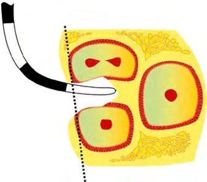

نسخه استخراجشده؛ ترجمه یا تأیید علمی انجام نشده است. وضعیت: captured
فاصلهی CEJ تا جایی است که ریشهها از هم جدا میشوند. هرچه کوتاهتر باشد، فورکیشن زودتر درگیر میشود.

قطر دهانهی ورودی فورکیشن در بسیاری از موارد کمتر از ۰٫۷۵ میلیمتر است.
عرض تیغهی کورتهای معمول حدود ۰٫۷۵ تا ۱٫۱ میلیمتر است.
📌 نتیجه مستقیم: ابزار استاندارد در بخش قابل توجهی از فورکیشنها اصلاً وارد نمیشود. این تنها یک نکتهی تئوری نیست؛ دلیل اصلی شکست درمان غیرجراحی در فورکیشن همین است.
سقف فورکیشن اغلب مقعر است.
در سطح داخلی ریشهها شیارها و تقعرات وجود دارد.
در شمار قابلتوجهی از مولرها کانالهای فرعی از کف اتاقک پالپ به ناحیهی فورکیشن باز میشوند؛ همان مسیری که اندو و پریو را به هم وصل میکند.
پرمولر اول بالا: تقعر عمیق در سطح مزیال. یکی از دشوارترین سطوح برای جرمگیری در کل دهان.
مولر اول بالا: تقعر در سطح داخلی ریشه مزیوباکال.
مولرهای پایین: تقعر در سطح داخلی ریشه مزیال و دیستال.
ثنایای بالا: ریشه مخروطی و معمولاً بدون تقعر عمیق.
زائده مینایی سرویکالی (CEP): امتداد مینا از CEJ به سمت فورکیشن. چون فیبر بافت همبند به مینا نمیچسبد، این ناحیه نقطه ضعف چسبندگی است و با درگیری فورکیشن ارتباط قوی دارد. طبقهبندی مسترز و هاسکینز آن را به سه درجه تقسیم میکند.
مروارید مینایی (Enamel Pearl): توده کروی مینا روی سطح ریشه، اغلب نزدیک فورکیشن مولرها.
فرنوم چینی از مخاط است که لب یا گونه را به مخاط آلوئولار وصل میکند. مشکل وقتی شروع میشود که اتصال آن بالا و نزدیک مارجین لثه بنشیند.
کشش فرنوم هنگام حرکت لب، مارجین را از دندان جدا میکند.
پیامدها: تجمع پلاک، التهاب مداوم و در فنوتیپ نازک لثه، تحلیل لثه.
تست ساده: لب را بکش؛ اگر مارجین لثه سفید یا جابهجا شد، کشش فرنوم معنادار است.
فرنکتومی زمانی اندیکاسیون دارد که این کشش باعث تحلیل پیشرونده یا مانع بهداشت شود؛ نه صرفاً بهخاطر وجود فرنوم.
⚠️ اشتباه رایج ۱: دهانهی فورکیشن اغلب باریکتر از تیغهی کورت است؛ همین محدودیت فیزیکی، نه کممهارتی، دلیل اصلی شکست درمان غیرجراحی فورکیشن است.
⚠️ اشتباه رایج ۲: تنهی ریشهی کوتاهتر یعنی درگیری فورکیشن زودتر.
⚠️ اشتباه رایج ۳: عمیقترین تقعر شناختهشده در سطح مزیال پرمولر اول بالا است.
نوع سؤال: ساخت کلمه · 7 خانه
حروف منبع: و · ا · ر · ر · د · ی · م